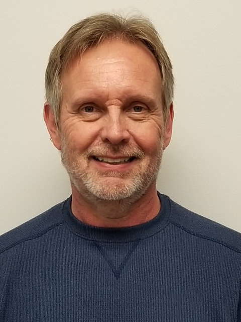

About Me
Hello, my name is Michael Henderson. I was born in Roanoke Virginia in 1958. I spent most of my early childhood years in Richmond. My family and I moved to Richardson Texas in 1973 because my father accepted a new job position. I graduated from Pearce High School in Richardson in 1976.
After high school, I went to work for Texas Instruments in Richardson as a computer operator. While working fulltime, I attended Richland college in Dallas, and received an associate degree in Arts and Sciences in 1980. At Texas Instruments, I was introduced to computers and enjoyed it so much I decided it would be my career.
In 1980, I took a leave of absence from Texas Instruments to attend the University of North Texas. In 1983, I graduated with a Bachelor of Science degree in Computer Science. After graduating from North Texas, I returned to Texas Instruments as a Systems Programmer. In 1986, I left Texas Instruments and started working for a Software development firm OpenConnect Systems in Dallas as a Software Developer.
I enjoy traveling both in the US and abroad. I am a big sports fan. My favorite teams are the Green Bay Packers and Dallas Stars. I have been to Wisconsin several times to watch the Packers play at Lambeau Field. I am currently a season ticket holder with the Stars.
My hobbies include playing golf, practicing yoga, listening to music, and tinkering with my guitar.